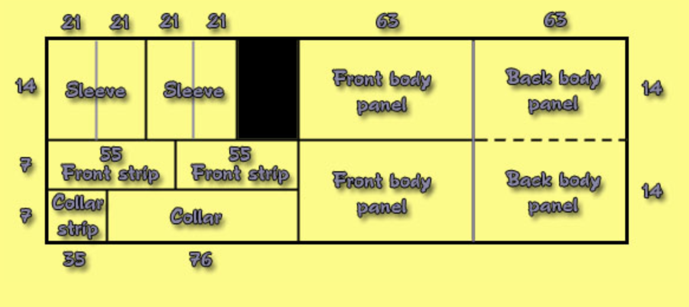

Fabrication

The kimono is super efficient, it is cut out of a singe long, rectangular strip of fabric.
You use the entire strip, almost no waste, with all rectangular cuts which make it super easy to assemble as well.
Historically, the seam allowances are flexible and not trimmed down, allowing kimonos and yukatas to be easily
disassembled and re-sewn at larger/smaller sizes, depending on what is necessary.